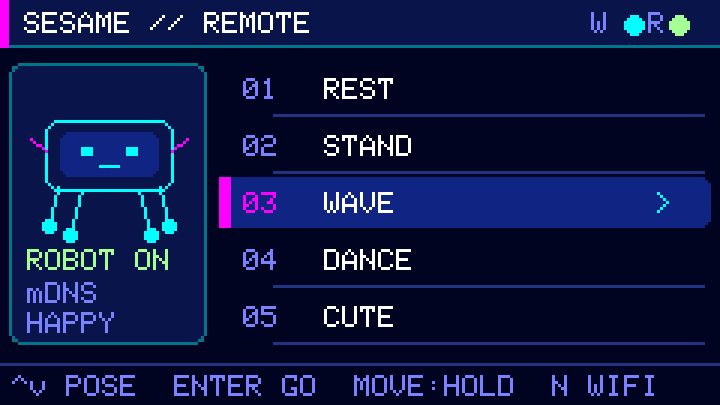
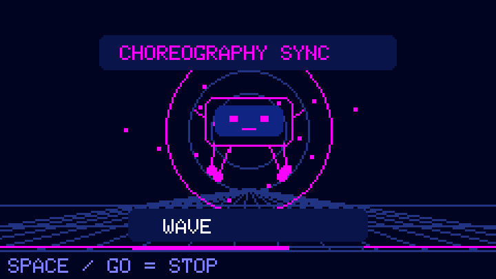
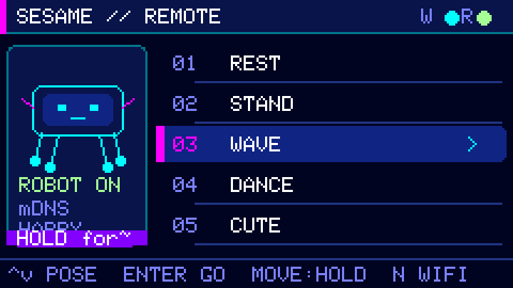
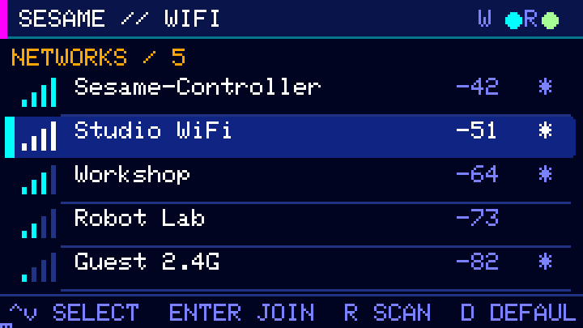
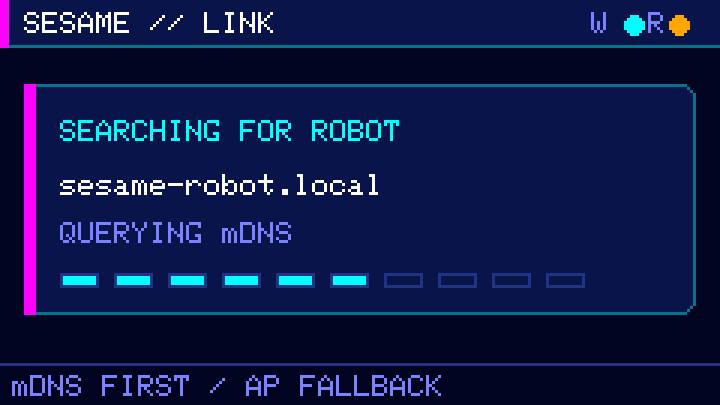

Hold to move
W / ↑ forward · A / ← left · S / ↓ backward · D / → right
Release the movement key to send stop.M5STACK CARDPUTER ADV / v0.1.0
Find Sesame over Wi-Fi, launch poses with a neon countdown, and steer with true press-and-hold controls—without reaching for a phone.

REAL FIRMWARE SCREENS
Every image below is generated by the same M5GFX drawing code that ships in the firmware—not a browser mockup.




Renderer captures · M5GFX SDL backend · Native size 240×135 · Integer-scaled for clarity
CONNECTION FLOW
The remote handles the network path and keeps the controls focused on the robot. It is designed for the original Sesame robot project .
Connects to Sesame-Controller by default, or scans nearby 2.4 GHz networks.
Finds sesame-robot.local through mDNS, with a guarded AP fallback.
Sends pose and movement commands over the robot’s local HTTP API.
CONTROL MAP
W / ↑ forward · A / ← left · S / ↓ backward · D / → right
Release the movement key to send stop.Enter plays the launch animation, then sends the selected action.
Space or the Cardputer’s Go button immediately sends stop.
Scan nearby access points and enter a password on-device.
Search again for sesame-robot.local.
INSTALL v0.1.0
Download the signed release package below.
Copy the BIN to the Cardputer SD card.
Open M5Apps → Installer → SD and choose a slot.
0d2ab06c5c052696b9f89f6c5b713a7eb02a6fce07e55fd9b9c996a10ca0a9aa